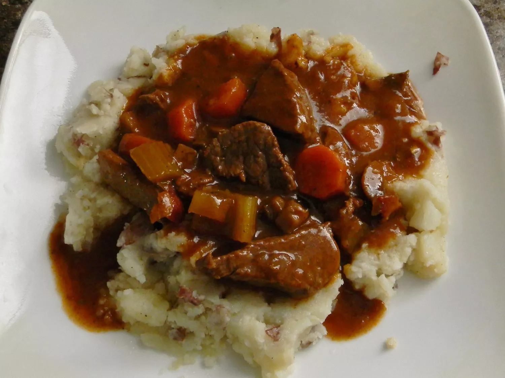

Beef and Guinness Stew

Beef and Guinness Stew
This Guinness beef stew is a very simple dish, but at the same time, it
has a deep, complex, rich flavor. The maltiness of dark beer really does
amazing things for the gravy. I served this in a nice ring of green
onion-mashed potatoes. I hope you give this a try, whether for Saint
Patrick's Day or any time of the year.
Ingredients
-
Bacon: This Guinness stew starts with bacon. You'll use
the bacon and the bacon fat to cook the beef.
-
Beef: Cut your boneless beef chuck into 2-inch pieces.
-
Seasonings and herbs: This flavorful beef stew is
seasoned with salt, black pepper, fresh garlic, white sugar, and fresh
thyme.
-
Beer: Of course, you'll need a can of dark beer (such
as Guinness).
-
Vegetables: This chunky Guinness stew features onions,
carrots, and celery.
-
Tomato paste: Tomato paste adds richness and flavor
depth.
-
Stock: Use store-bought or homemade broth. You can use
chicken or beef stock.
-
Mashed potatoes: Mashed potatoes are optional, but they
make a great bed for the Guinness stew. Try our top-rated Basic Mashed
Potatoes recipe.